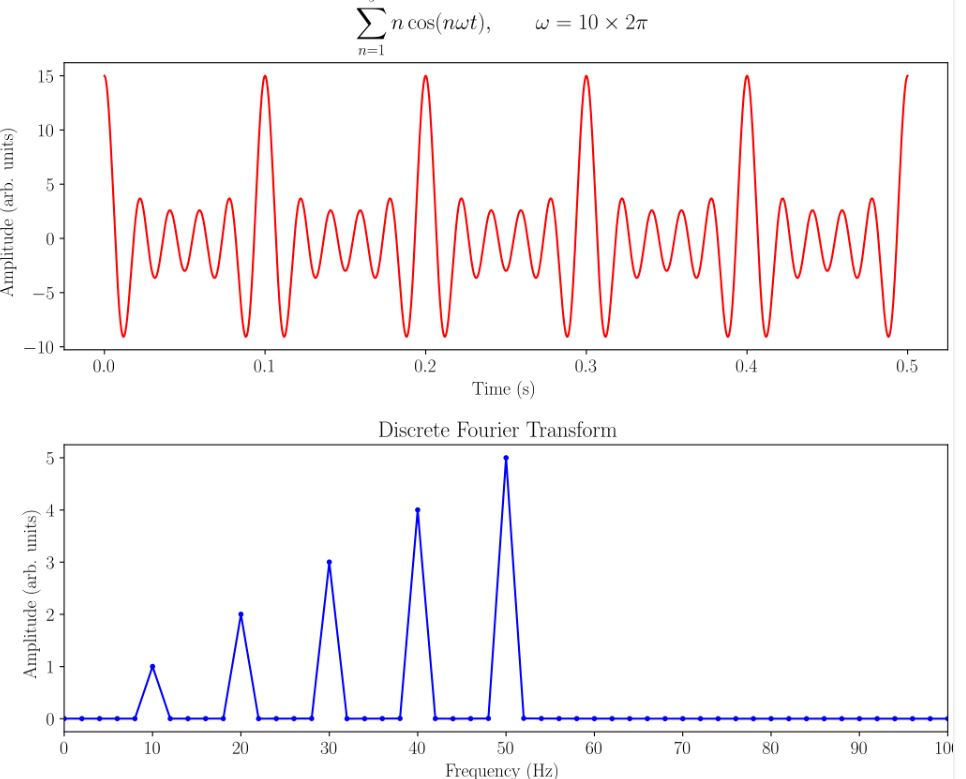
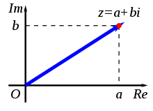

eYFi-Mega based Spectrum Analyzer
Mentor(s) : Sourav, Prasad
Interns : Aravinda Harithsa, Marefat Abbas
Introduction
eYFi Mega based Spectrum Analyzer is an Audio device project where we will take the input signal from Microphone and display its frequency spectrum as output. In this project we will be using OLED display for Spectrum Display and an Amplifier Microphone for Signal.
DEMO OF PROJECT
eYFi Mega Development board
eYFi Mega Development board is an Atmega2560 and ESP32 based development board, made in India. This board is developed by eYantra at IIT Bombay.
Key-points:
- Atmega2560 and ESP32 based
- WiFi Compatible
- FreeRTOS Compatible
- Arduino IDE suitable
What is a Spectrum Analyzer ?
Spectrum Analyzer is an electronic device which measures the magnitude of an Input Signal (Audio Signal) versus Frequency within full frequency range of device. Used for analyzing waves in frequency domain. This Spectrum Analyzer device is used for Power applications.
Digital Signal Processing (DSP)
Mathematical manipulation of Digial Signals like Audio, Video, Pressure, Temperature, etc is called as Digital Signal Processing (DSP). It is the use of digital processing, such as by computers or more specialized digital signal processors, to perform a wide variety of signal processing operations. DSP can involve linear or nonlinear operations. Nonlinear signal processing is closely related to nonlinear system identification and can be implemented in the time, frequency, and spatio-temporal domains.
ESP32 based Spectrum Analyser
Overview
This project converts an analogue signal which is received from microphone module and displays its frequency components in the form of a spectrum of bands on an OLED display. To do this, it uses a Fast Fourier Transform (FFT) . Sampling theorem is a fundamental bridge between continuous-time signals (analogue signals) and discrete-time signals. It uses a sample rate that enables discrete sequences of samples to capture all the information from a continuous-time signal of finite bandwidth.
ESP32 WROOM which is present on our development board can analyze analogue signals with a maximum fundamental frequency of 20,000Hz (20.0 KHz) with a sample size of 512 elements. This limit is determined by the Analogue to Digital Converter (ADC) speed which can convert at a rate of approximately 40 KHz.So for our application 0-20,000 hz was more than sufficient
The system is comprised of the processor ESP32, an OLED display either 0.96″ and a audio microphone MAX4466 unit that is comprised of an electret microphone and pre built tunable amplifier. The received audio is applied to the ADC input of the process.
FFT Elements – Sample Size and Sampling frequency
Sample Size – The FFT-algorithm defines a set of samples for the analysis results to be stored in. For most algorithms, the number of samples is usually a factor of 2, so 16, 32, 64, 128 or 256 are not unusual. The greater the number of samples the more time it takes to convert an analogue signal, but the greater the frequency resolution and discrimination will be.
Sampling Frequency – Reference to the Nyquist-Shannon Sampling Theorem says sampling of an analogue signal needs to be at least twice the frequency of the signal being analyzed, this limits the maximum frequency to half of the sampling frequency.

The diagram above illustrates a wave which is colored red in the time domain, which refers to a view of the waveform with respect to amplitude and time, it therefore shows how the waveform changes over time.
This is then overlaid with a frequency domain plot showing a representation of the individual frequency components which are embedded into it and their phase relationships
In a Fourier transform analysis converts the function’s time-domain representation, shown in red, to the function’s frequency-domain representation, shown in blue. The component frequencies and amplitudes are spread across the frequency spectrum chosen for analysis and are represented as peaks in the frequency domain.
In our implementation of code , the Fast Fourier Transform (FFT) is used , which is an algorithm that computes discrete Fourier transforms of the sampled waveform thereby enabling the waveform to be changed from its original time domain to the frequency domain. The FFT rapidly computes such transformations by factorizing the result into a matrix., we have made use of ArudinoFFT library which contains various functions,filters and windows .This library is the heart of the code which does translation of input analog signal into frequency spectrum .This library is easy to use and produced best accurate output for this project. Prototype is configured to make 64 samples and does FFT with those samples. ArduinoFFT library can do FFT of samples between 16 to 512. In the code the result arrays of real and imaginary components are called:
double vReal[SAMPLES];
double vImag[SAMPLES];
In the array vReal and vImag this contains what is called the complex number results separated into the mathematical parlance of Real (vReal) and Imaginary (vImag) components.

The contents of the arrays vReal and vImag contain the coordinates in the complex number in what's called polar coordinates that refers to the distance of a point of origin z from the origin (O), and the angle subtended between the positive real axis (Re) and the line segment Oz in a counter-clockwise sense. This leads to the polar form of complex numbers.
The absolute value (or modulus or magnitude) of a complex number is defined as z = x + jy where ‘j’ is an imaginary operator.
Its amplitude is derived from z = sqrt(a2 + b2)
In the code once the sampling of a waveform has been completed and the result captured in the array elements of vReal[]
we can ignore the phase angle for the analysis ,so vImag[ ] array elements are always assigned to 0.
Next the array vReal is analysed by the FFT function, as follows:
FFT.Windowing(vReal, SAMPLES, FFT_WIN_TYP_HAMMING, FFT_FORWARD);
here we will be selecting the relevant window function,Number of samples ,and the array values of vreal
FFT.Compute(vReal, vImag, SAMPLES, FFT_FORWARD);
Here we will be applying the FFt core algorithm by passing the relevant information
FFT.ComplexToMagnitude(vReal, vImag, SAMPLES);
We will be converting the obtained complex results into Real magnitude which can be plotted to form the spectrum . Hence we have reached the last step of this process